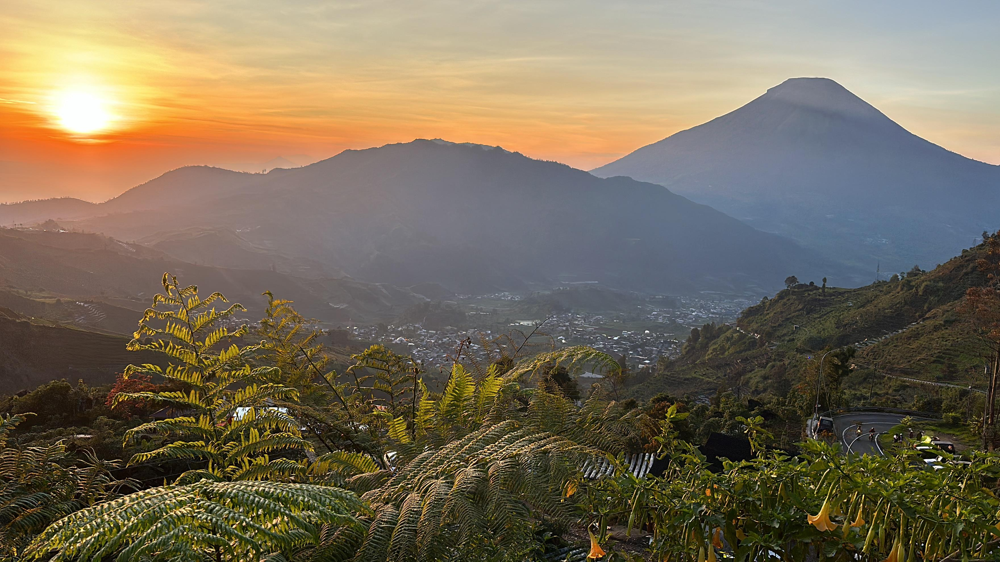

Paket Wisata Dieng
 Situs ini: https://paketdieng.my.id/Definisi
Paket wisata Dieng adalah rangkaian layanan perjalanan wisata ke kawasan Dataran Tinggi Dieng, Jawa Tengah, yang disusun dalam satu paket terintegrasi. Paket ini umumnya meliputi transportasi, tiket masuk destinasi wisata, penginapan (untuk paket lebih dari 1 hari), konsumsi, serta pemandu wisata. Semua layanan dirancang agar wisatawan dapat menikmati perjalanan dengan lebih mudah, terorganisir, dan efisien waktu.
Manfaat Paket Wisata
- Memberikan kemudahan dalam perencanaan perjalanan tanpa harus mengatur detail logistik sendiri.
- Waktu kunjungan lebih efisien dengan itinerary terjadwal.
- Biaya lebih transparan dan cenderung hemat karena sudah termasuk tiket destinasi, transportasi, dan layanan lain.
- Adanya pemandu atau tour leader yang membantu wisatawan memahami wisata Dieng secara lebih baik.
- Mengurangi risiko kesalahan rute, keterlambatan, atau informasi kurang akurat seputar wisata Dieng.
Fasilitas Umum
Fasilitas dalam paket wisata Dieng dapat bervariasi, namun umumnya meliputi:
- Transportasi selama wisata (mobil/minibus/elf/bus)
- Tiket masuk destinasi wisata
- Penginapan (khusus paket lebih dari 1 hari)
- Konsumsi (makan pagi/siang/malam, snack, air mineral)
- Pemandu wisata (tour guide/leader)
- Dokumentasi perjalanan (foto, video, opsional)
- Asuransi perjalanan (opsional, tergantung penyedia)
Destinasi Populer
Paket wisata Dieng biasanya mencakup beberapa destinasi favorit, seperti:
- Bukit Sikunir dan Telaga Cebong (spot sunrise)
- Kawah Sikidang
- Kompleks Candi Arjuna
- Telaga Warna dan Telaga Pengilon
- Batu Ratapan Angin
- Dieng Plateau Theater
- Telaga Menjer
- Kebun Teh dan Gardu Pandang Tieng
- Museum Kailasa Dieng
Pilihan Paket 1–3 Hari
- Paket 1 Hari: Wisata singkat, berangkat dini hari atau pagi, kunjungan ke beberapa destinasi utama, biasanya tanpa menginap.
- Paket 2 Hari 1 Malam: Termasuk menginap satu malam di Dieng atau Wonosobo, itinerary lebih lengkap, waktu lebih fleksibel untuk eksplorasi.
- Paket 3 Hari 2 Malam: Pilihan untuk wisatawan yang ingin menikmati lebih banyak destinasi dan pengalaman, cocok untuk keluarga atau group.
Harga Paket ke Dieng 2025
Berikut adalah estimasi harga paket wisata Dieng terbaru yang umum ditawarkan berbagai penyedia perjalanan di tahun 2025. Harga bisa berbeda tergantung jumlah peserta, fasilitas, dan titik keberangkatan.
- Paket 1 Hari: mulai Rp275.000/orang
- Paket 2 Hari 1 Malam: mulai Rp950.000/orang
- Paket 3 Hari 2 Malam: mulai Rp1.450.000/orang
*Harga dapat berubah sewaktu-waktu dan dapat berbeda pada setiap penyedia jasa.
Penutup
Paket wisata Dieng merupakan pilihan yang efektif bagi wisatawan yang ingin menikmati pesona alam dan budaya Dataran Tinggi Dieng tanpa perlu repot mengatur detail perjalanan secara mandiri. Melalui sistem yang sudah terorganisir, wisatawan dapat memperoleh berbagai kemudahan mulai dari transportasi, penginapan, tiket destinasi, konsumsi, hingga pemandu wisata. Keberadaan paket wisata ini tidak hanya menghemat waktu dan biaya, tetapi juga meminimalisir risiko hambatan selama perjalanan, sehingga pengalaman menjelajah Dieng menjadi lebih nyaman, aman, dan berkesan.
Beragamnya pilihan paket, mulai dari perjalanan satu hari hingga beberapa hari, memungkinkan setiap orang untuk menyesuaikan kunjungan sesuai kebutuhan, durasi, dan anggaran. Dengan fasilitas yang umumnya telah mencakup berbagai aspek perjalanan, paket wisata Dieng dapat menjadi referensi utama bagi individu, keluarga, maupun kelompok yang ingin mengenal dan menikmati kekayaan alam, sejarah, serta kearifan lokal kawasan Dieng. Informasi yang tersaji di halaman ini diharapkan dapat memberikan gambaran menyeluruh bagi siapa saja yang berencana berwisata ke Dieng, maupun yang sekadar ingin mengetahui ragam layanan perjalanan yang tersedia.
FAQ – Pertanyaan Umum tentang Paket Wisata Dieng
Apa itu paket wisata Dieng?
Paket wisata Dieng adalah layanan perjalanan terintegrasi ke kawasan Dieng, Jawa Tengah, meliputi transportasi, tiket masuk destinasi, penginapan, konsumsi, hingga pemandu wisata. Semua dirancang untuk memudahkan perjalanan wisatawan.
Apakah paket wisata Dieng selalu termasuk penginapan?
Tidak selalu. Paket satu hari umumnya tanpa penginapan, sedangkan paket dua hari atau lebih biasanya sudah termasuk penginapan di Dieng atau Wonosobo.
Apakah bisa memilih destinasi di dalam paket?
Kebanyakan paket sudah punya itinerary tetap, tetapi beberapa penyedia wisata menyediakan opsi custom sesuai permintaan peserta, terutama untuk group atau private trip.
Berapa harga rata-rata paket wisata Dieng?
Harga bervariasi tergantung durasi, jumlah peserta, fasilitas, dan asal keberangkatan. Umumnya mulai ratusan ribu rupiah per orang untuk paket sharing, hingga jutaan rupiah untuk private/group eksklusif.
Apa saja destinasi populer dalam paket wisata Dieng?
Destinasi umum meliputi Bukit Sikunir, Kawah Sikidang, Candi Arjuna, Telaga Warna, Telaga Pengilon, Batu Ratapan Angin, Dieng Plateau Theater, dan Telaga Menjer.
Bagaimana cara memesan atau mendapatkan informasi terbaru?
Wisatawan sebaiknya mencari informasi dan pemesanan melalui penyedia jasa terpercaya, situs resmi, atau kontak langsung dengan agen wisata yang sudah terverifikasi.
Apakah tersedia paket untuk keluarga atau rombongan besar?
Tersedia. Banyak penyedia wisata Dieng menawarkan paket khusus untuk keluarga, komunitas, sekolah, hingga perusahaan, dengan fasilitas dan harga yang bisa dinegosiasikan.
Apakah sudah termasuk asuransi perjalanan?
Asuransi perjalanan biasanya bersifat opsional, tergantung paket dan kebijakan penyedia jasa. Pastikan bertanya atau meminta info detail sebelum berangkat.
Referensi
- Putra Tour Dieng. Informasi layanan dan itinerary perjalanan wisata ke kawasan Dieng. Diakses 18 Juli 2025.
- Paket wisata Dieng dari Jakarta. Rekomendasi paket wisata ke Dieng dengan pilihan meeting point. Diakses 18 Juli 2025.
- Harga paket wisata Dieng. Daftar harga dan rincian fasilitas paket wisata Dieng berbagai pilihan durasi. Diakses 18 Juli 2025.